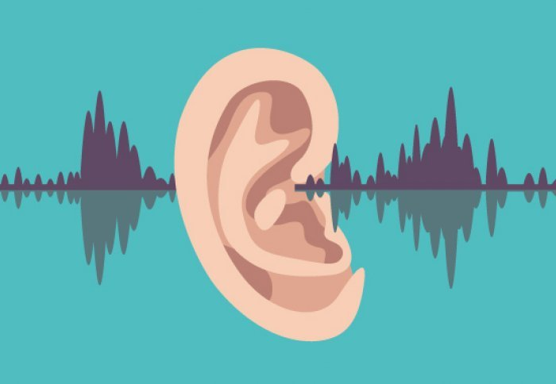

Про подкасты, аудиокниги, навыки восприятия и время

Подкасты
Не смотря на то, что на дворе уже не начало двухтысячных, иногда (к счастью, всё реже и реже) при употреблении понятия "подкаст" я получаю в ответ недоумевающий взгляд и вопрос - "Что это?". Подкаст-культура в нашей стране распространена существенно слабее, нежели в США, но тем не менее, нам тоже есть, чем гордиться и что слушать.
На всякий случай, если меня читает кто-нибудь, кто до сих пор не представляет, что это такое, я кратко объясню. Ближе всего к понятию "подкаст" наверное находится термин "радиопередача". Подкасты могут быть тематические (что чаще всего) и, соответственно, нетематические. Подкасты могут иметь разный формат. Самый частый - это несколько ведущих, обсуждающих список заранее подготовленных тем. Так же к ведущим могут присоединиться приглашённые гости. Иногда ведущий может быть и один. Подкаст так же может полностью состоять из зачитываемых статей или отрывков книг, может содержать музыкальные произведения или их фрагменты.
В отличие от онлайн радио, каждый выпуск ограничен по времени вещания и может быть скачан отдельно. Часто радиостанции из потока своего вещания делают подкасты, объединяют по темам и выкладывают в сеть. Яркий и приятный пример - радио "Маяк".
Для облегчения прослушивания подкастов существуют так называемые подкаст плееры. Подкаст плеер - это приложение, позволяющее оформить подписки на подкасты, скачивать выпуски и формирoвать очередь для прослушивания. Скажем, если мне интересна некая определённая передача в рамках вещания того же радио "Маяк", например, "Неизвестное об известном", то мне незачем ждать выхода следующей серии, как это было бы в случае с онлайн радио (тем более, серия может быть уже закрыта), я могу просто прочитать описание к интересующим меня выпускам, отметить десяток понравившихся выпусков, загрузить их и прослушивать в фоновом режиме, в том числе при отсутствии подключения к интернету. Зачастую подкаст плееры имеют различные дополнительные настройки для скачивания и воспроизведения - например, можно ускорить или замедлить воспроизведение, установить таймер автоотключения, изменить настройки автоматического скачивания новых и удаления старых подкастов и т.п.. Конечно же, в большинстве подкаст проигрывателей есть поиск по подкастам и темам.
Так же существуют гейты из каналов youtube в формат ленты, поддерживаемой подкаст плеером, но нормально и стабильно работающих я пока не обнаружил, возможно напишу сам, когда будет время.
Как вы уже поняли, я часто и много слушаю подкасты. У меня есть беспроводная колонка, которая не боится воды и падений и, практически каждый день, чтобы не терять время впустую, в процессе принятия душа я получаю новую порцию информации для размышлейний на совершенно разные темы. Так же я постоянно что-то слушаю, когда добираюсь на работу или пока отхожу ко сну. Я стал слушать намного меньше музыки и намного больше озвученного текста. В общей сложности в сутки получается прослушать примерно от двух с половиной до шести часов. Преимущественно это подкасты айтишной тематики, но есть и множество остальных - психология, научпоп, музыка, литература и прочие, для которых я не могу подобрать конкретного жанра. Пожалуй, обозначу их как "развлекательные". Подкаст плеер подсказывает, что сейчас у меня 52 активных подпсики и 38 выпусков в очереди общей длительностью более 28-и часов. Много? Не думаю. Вся ли ваша деятельность в полной мере относится к разряду "высшей нервной"? Требует ли от вас существенного умственного напряжения, скажем, мытьё посуды? Использование пылесоса? Перемещение себя в пространстве из точки "А" в точку "Б"? Вряд ли. Есть множество вещей, которые мы делаем практически на автопилоте и это прекрасный повод использовать данное время более продуктивно. Для меня аудиокниги - это абсолютно полноценная замена обычных книг, а подскасты - в некотором роде их облегчённая версия. Скажем, замена журналам, газетам и выпускам новостей. Я добровольно отказался от машины и пользуюсь общественным транспортом, в котором я могу себе позволить почти два часа в день "читать". Были конечно и другие причины, но описанная выше является крайне приятным бонусом.
Что мне особо нравится - при формировании очереди прослушивания ты сам распределяешь записи в той последовательности, в которой прослушивание представляется тебе наиболее комфортным. Обычно я чередую длинные полутора или двухчасовые подкасты с чем-нибудь коротким из научно-популярного. По моим наблюдениям, это позволяет усваивать информацию легче, словно перезагружает сознание.
О восприятии текста на слух

Сейчас раз за разом достаточно часто повторяется одна и та же ситуация. Когда я хочу посоветовать кому-нибудь из друзей послушать подкаст или аудиокнигу - мне отвечают, что не воспринимают аудокниги на слух и предпочитают читать что-либо в текстовом виде. Причём позиция нежелания даже попробовать что-либо послушать отстаивается с таким упорством, будто я предложил попробовать героин или поучаствовать в акте коллективного суицида. Для кого-то препятствием восприятию становится голос диктора, не соответствующий собственному внутреннему голосу и по этой причине вызывающий отторжение, для кого-то - излишняя или наоборот - недостаточная эмоциональность того же диктора, а для кого-то - невозможность сконцентрироваться из за постоянно присутствующих вокруг отвлекающих факторов. Каждый раз, когда я слышу что-то подобное, я вспоминаю себя лет семь тому назад. Я ответил своему другу на подобный совет точно таким же образом и привёл те же самые аргументы. Сейчас я вспоминаю это и улыбаюсь. На такие контраргументы хочется дать ответ, симметричный ответу на фразу некоторых женщин "все мужики - козлы":
- Да у тебя просто подкаста нормального никогда не было!
Если задуматься, то до того, как дети научатся читать, родители им читают сказки на ночь. Далее в течение жизни мы постоянно развиваем навык чтения или хотя бы поддерживаем его на некоем определённом уровне (по крайней мере я на это надеюсь). Чтение для подавляющего большинства из нас становится более естественным процессом (в том числе этому способствует наша работа и соцсети), нежели восприятие большого непрерывного потока информации на слух, которое после обучения в университете для нас носит скорее эпизодический характер. При обычном общении с окружающими нас людьми, мы чаще всего включены в этот процесс более активно - повествование нашего собеседника естественным путём прерывается нашими репликами, мы смотрим собеседнику в глаза, отслеживаем его мимику, позу и жесты, даже если не отдаём себе в этом отчёта. Таким образом наш мозг обрабатывает дополнительную информацию, помогающую коммуникации. Например, мы можем на основании этих дополнительных данных понять, говорит ли человек искренне, шутит он или серьёзен, какие эмоции он испытывает и так далее. Как раз из-за этой непосредственной и более глубокой вовлечённости в процесс беседы, наше внимание не рассеивается, как это может происходить при прослушивании аудиокниг.
Зато навык восприятия речи на слух можно тренировать, как и любой другой навык. Вы ведь не родились сразу с умением читать и писать? Вы даже говорить когда-то не умели. И вряд ли кто-то давал вам Кафку и Кьеркьегора, когда вы были в возрасте пяти лет с целью обучения вас чтению. Учиться лучше воспринимать информацию на слух следует с тех вещей, которые воспринимать на слух легко, а в идеальном случае - ещё и интересно. Конечно, это очевидно, но я всё же подчеркну - интерес к прослушиваемой информации является главным фактором, определяющим насколько легко вы усвоите материал. Подкастов и аудиокниг великое множество, а вы - один (одна). Если вы периодически ловите себя на том, что потеряли нить повествования - не переживайте, такое случается, это вполне нормально и всегда можно перемотать назад. Если это происходит часто - не мучайте себя, переключитесь на другой, более интересный для вас подкаст, к этому вернётесь позднее, в другой ситуации и если вы того захотите. Во-первых, со временем эпизодов потери контекста станет меньше и они будут сокращаться, вам станет легче. А во-вторых, очень сомневаюсь, что вы будете страдать от недостатка того, что можно послушать.
Переоценить важность навыка прослушивания аудиокниг и подкастов сложно. Помимо того, что вы можете существенно разгрузить своё зрение, что само по себе очень неплохо, вы так же сможете "читать" что угодно и где угодно. Вам никогда не будет скучно в ситуациях вынужденного бездействия. Например, в очереди в поликлинике или в поезде. Вы намного легче сможете справляться с какими-либо обязанностями, которые у вас не вызывают восторга и энтузиазма - с мытьём посуды, уборкой, походом в магазин за хлебом. Вы получите множество новых знаний и расширите свой кругозор, у вас появится возможность "прочитать" те книги, которые вы давно откладывали. Но начинать желательно с коротких рассказов и подкастов, длительностью 10-30 минут.
Есть ли негативные побочные эффекты? Теоретически - да. Иногда, когда я прихожу домой и жена меня спрашивает, холодно ли на улице, а я не могу ответить. Я не знаю, как там было снаружи, я не обратил на это внимания. И только потом я начинаю ощущать - замёрз я или нет. С тем же успехом, если я одет в куртку, я могу не обратить внимания на дождь, и, возможно, захват мира инопланетянами. Иногда я замечаю, что на какой-то улице "внезапно" выросла пара многоэтажек, будто вчера их не было. Плохо ли это? Сначала меня подобные моменты настораживали, поскольку я опасался угодить под машину, перейти улицу не на тот свет и в результате попасть именно на тот. Тем не менее, мой мозг каким-то образом адекватно реагирует на важные факторы происходящего в окружающей действительности - на сигналы светофора, машины и всё прочее, это происходит автоматически. Семь лет пробега с подкастами, полёт нормальный. Но вы на всякий случай будьте аккуратны. По крайней мере, в общественном транспорте вполне можно позволить себе расслабиться, если конечно, вы не везёте в сумке миллион долларов.
Влад Копп и МДС
Любите ли вы научную (и не очень) фантастику так, как её люблю я? Надеюсь, что да. Иногда нам просто необходимо "выпасть" из своих серых будней, наполненных работой и заботами и улететь куда-нибудь в другую галактику, побывать в ином измерении или на полчаса погрузиться в мир, где существует магия. Я лично не вижу в этом абсолютно ничего плохого. И вот, мой друг посоветовал мне ознакомиться с проектом МДС (модель для сборки). Изначально это было циклом радио передач, в рамках которого зачитывались небольшие рассказы, преимущественно относящиеся к жанру фантастики. Чем же этот проект так хорош и уникален? Да практически всем!
Во-первых, это автор (он же ведущий и диктор в одном лице). Влад Копп озвучивает рассказы, не побоюсь этого слова, просто гениально! На второй или третьей минуте ты просто проваливаешься в повествование и всё окружающее перестаёт для тебя существовать. Он озвучивает разных персонажей различными голосами, шикарно отыгрывает роли, меняет тембр и интонации так, что ты ему веришь! Когда он читает текст за маленькую девочку или тучную тётку, это совершенно не ощущается чем-то неправильным, ненатуральным. Твоё воображение рисует именно маленькую девочку и тучную тётку. Никакого диссонанса. Это редкий талант. Владислав Копп - профессиональный актёр озвучки, на его счету более 70 фильмов, плюс в десятке фильмов он непосредственно играл (например, в нескольких частях ДМБ).
Во-вторых, это музыка. Я не поклонник подобного жанра, кажется, это один из видов ambient, но в МДС в качестве фоновой музыки он пришёлся идеально. Более того, музыка меняет свой характер в зависимости от происходящих в рамках повествования событий. Она становится то тревожной, то грустной, то весёлой и т.п.. Более того, фоновая музыка отлично отсекает внешние шумы и помогает сконцентрироваться на повествовании. Да, если бы мне когда-то сказали, что фоновая музыка может оказать положительное влияние на качество восприятия аудиорассказа, я бы не поверил, тем не менее, это так. Вместе с речью Владислава музыка хорошо помогает создать нужную атмосферу.
В-третьих, это объём. Проект начал своё существование с 1995го года, сменил несколько платформ, прерывался, недавно вновь продолжил свою деятельность и так или иначе, жив до сих пор. Вы можете себе это представить? Уже больше двадцати лет Владислав Копп озвучивает повести и рассказы и результат его деятельности вызывает восторг далеко не только у меня одного. За это время накопилось чудовищное количество материала. Думаю, вам хватит на несколько лет.
В-четвёртых - формат. Так как изначально это были радиопередачи, то обычно повествование длится минут двадцать - тридцать. Этого вполне достаточно для интересного рассказа, наполненного событиями и деталями, но в то же время недостаточно для того, чтобы успеть вас утомить. Иногда попадаются и более объёмные произведения, разбитые на несколько частей той же длительности. Например, в таком формате я когда-то с удовольствием прослушал "Алхимика" Коэльо. Всё чаще возвращаюсь к мысли о том, что с намного бОльшим удовольствием я бы слушал что угодно в исполнении Влада Коппа с соответствующим музыкальным бекграундом, нежели читал бы это с листа или экрана.
Какое-то время МДС выходил в том числе и в виде подкаста, но сейчас во многих подкаст аггрегаторах остались только заброшенные и необновляемые подписки. Лишь недавно МДС появился на SoundStream. В любом случае можно найти архивы выпусков, послушать online и скачать на одном из множества ресурсов. В том числе можно найти выпуски во "вконтакте" по запросу "модель для сборки". А вот тут есть отличный поиск по жанрам, месту действия, времени и т.п.. Честное слово, проект достоин того, чтобы потратить время на ознакомление с ним, даже если вы не любите фантастику.
Список приложений
- SoundStream (Android) - подкаст плеер
- Player FM (Android) - подкаст плеер
- AnthennaPod (Android) - подкаст плеер
- Smart AudioBook Player (Android) - приложение для прослушивания аудиокниг
Для владельцев айфонов в отношении приложений вряд ли смогу подсказать самое лучшее, так как этой платформой не пользуюсь, но знаю, что возможность скачивать и прослушивать подкасты есть и в самом iTunes, так что скорее всего окунуться в этот мир можно будет и без установки дополнительных программ.
- Подкасты (iOS) - подкаст плеер
- SoundStream (iOS) - подкаст плеер
Для "больших братьев" так же есть приложения, но исходя из собственного опыта, пришёл к выводу, что они не нужны - достаточно браузера, в противном случае телефон всё-равно рядом.
Список подкастов и групп
Ниже будет частичный список того, что нравится лично мне. Вы же всегда можете найти что-то для себя на https://soundstream.media или в google.
- Модель для сборки
- Тупичок гоблина - дублирует видео, выходящие на канале Дмитрия Юрьевича Пучкова
- Радио Маяк - все передачи, сгруппированные в отдельные подкасты
- Стаховский лайф - один из проектов Евгения Стаховского, очень приятный поток сознания
- Чтение - небольшие рассказы, либо отрывки из художественной литературы в исполнении Евгения Стаховского
- Мозг - научные лекции о человеке
- Ребятам о зверятах - эфир с учёным-натуралистом или врачом-ветеринаром
- Неизвестное об известном - лекции искусствоведа и историка
- Лекториум - различные темы (психология, биология, воспитание, наука)
- BeardyCast - подкаст о технологиях, гаджетах и медиакультуре
- Naked Science - научпоп
- Newочём - перевод различных интересных статей из зарубежного сегмента сети
- КритМышь - подкаст о науке и критическом мышлении
- Еженедельный подкаст от Umputun - тимлид со стажем рассказывает о своей жизни и работе в США
- Arzamas - история культуры
- Radio-T - айтишное, один из старейших подкастов рунета
- Droider Cast - подкаст о гаджетах, технологиях и играх
- Опытные на кухне - научно популярное шоу, в двух выпусках которого мне довелось лично поучаствовать в качестве докладчика
- Психология на ПостНауке
Где добывать аудиокниги легально
Ну и если чего-то не хватает, всегда можно воспользоваться поиском.
Теги: мысли-вслух, книги, подкасты